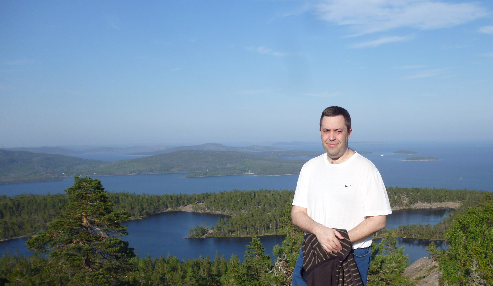

I have a broad interest in Community Ecology. I try to figure out how natural communities are structured and how they evolve. More specifically, I investigate constraints on trophic relationships and how they influence the structure of food webs. This constraints can either be biotic or abiotic. The surrounding medium plays a fundamental and often neglected role on community structure. The physical factors characterizing the medium (such as gravity, density or viscosity) as well as chemical factors (such as nutrient availability) play a fundamental role in species persistence and species interactions.
I also study the role of body size as an interface between species and the medium. As body size is related to many biological rates, it constrains species interactions.
My works implies use of mathematical models in order to investigate these factors and their effects on community structure.